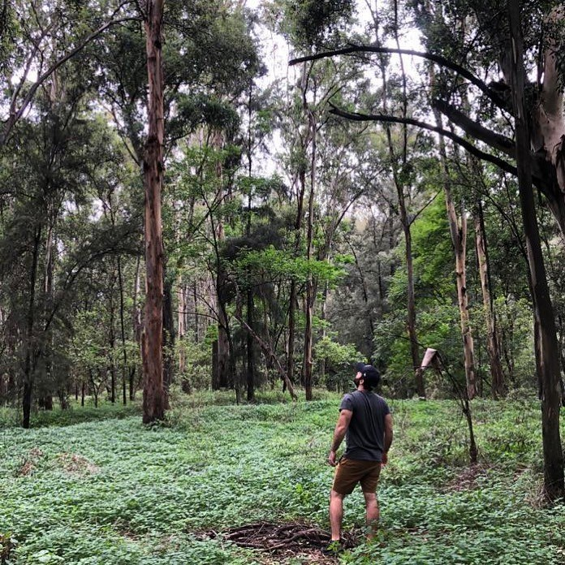

Latin America
In Guadalajara, Mexico, I worked as an English Language Fellow with the United States Depertment of State. My job was to train English teachers around the entire state of Jalsico.


In Guadalajara, Mexico, I worked as an English Language Fellow with the United States Depertment of State. My job was to train English teachers around the entire state of Jalsico.
I was a local high school English teacher focusing on conversational English. This was my first real teaching position abroad, and it was where I realized how much I needed to continue traveling and teaching.
Teaching in Xiamen, China is where I really solidified my abilities. I spoke very little Chinese, and my students spoke no English. This experience made me the teacher I am today. Every teacher should try to teach without using the students' first language.